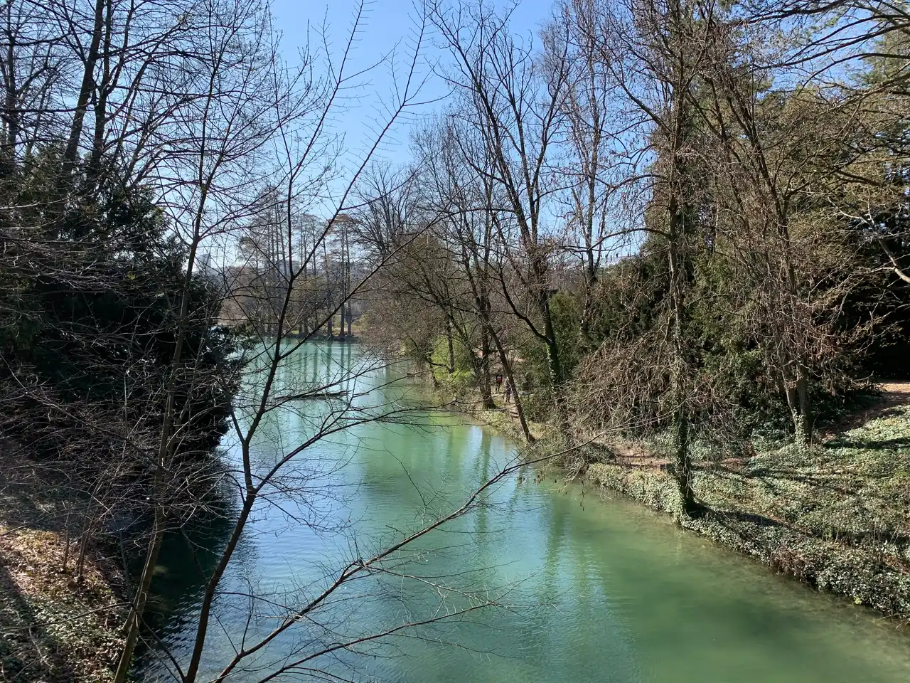

{kind=link}

Annecy 구시가지
알프스 만년설이 흘러드는 유럽에서 가장 투명한 안시 호수와 티우(Thiou) 운하를 품은 '알프스의 베네치아'. 12세기 수상 요새 팔레 드 릴(Palais de l'Île), 중세 안시 성채, 사랑의 다리(Pont des Amours).

론(Rhône) 강 북동쪽 강변에 자리 잡은 프랑스에서 가장 큰 117헥타르(약 35만 평) 규모의 도심 공공 공원이다.
파리의 불로뉴 숲(Bois de Boulogne)을 설계한 뷔네(Denis & Eugène Bühler) 형제가 1857년 리옹 시민들의 휴식처로 개장했다.
공원 부지에 황금으로 된 예수 그리스도의 머리상(Tête d'Or)이 묻혀 있다는 중세의 전설에서 공원 이름이 유래되었으며, 16헥타르 규모의 잔잔한 호수, 19세기 대형 철골 온실 식물원, 기린과 얼룩말이 거니는 아프리카 평원 야외 동물원, 3만 그루의 장미가 피어나는 국제 장미원이 완벽한 자연의 쉼터를 제공한다.
"복잡한 도심과 박물관 관광의 피로를 씻어내고, 론 강변의 푸른 호수와 거대한 센티넬 나무 그늘 아래서 진정한 휴식과 산책을 누리는 리옹 최고의 힐링 오아시스다." 폴 보퀴즈 시장에서 산 치즈와 바게트를 들고 와 호숫가 잔디밭에서 피크닉을 즐기거나 온실 식물원을 둘러보는 1.5~2시간 여정으로 완벽하다.
| 운영시간 | 여름(4/15~10/14) 6:30~22:30 / 겨울(10/15~4/14) 6:30~20:30. 폐장 15분 전 입장 마감 |
|---|---|
| 휴무 | 연중무휴 |
| 요금 | 무료 |
| 예약 | 예약 불필요·무료 입장 |
| 항목 | 상세 정보 |
|---|---|
| 위치 | Place Général Leclerc, 69006 Lyon |
| 운영 시간 | 매일 06:30–22:30 (하절기) / 06:30–20:30 (동절기) |
| 입장료 | 공원 전체, 온실 식물원, 동물원 전수 무료 개방 |
| 교통 접근 | 메트로 A호선 Masséna역 도보 10분, 버스 C1 / C4 / C5 Porte Tête d'Or 정류장 직결 |
| 편의시설 | 보트 대여소, 카페, 야외 화장실, 어린이 회전목마 완비 |
알프스 만년설이 흘러드는 유럽에서 가장 투명한 안시 호수와 티우(Thiou) 운하를 품은 '알프스의 베네치아'. 12세기 수상 요새 팔레 드 릴(Palais de l'Île), 중세 안시 성채, 사랑의 다리(Pont des Amours).

유럽 최대 규모의 순수 보행자 붉은 자갈 광장(6.2ha)이자 리옹 지리망의 원점(Point Zéro). 중앙의 루이 14세 기마상과 푸르비에르 언덕 조망, 남서쪽 생텍쥐페리와 어린 왕자 기념 동상.

19세기 리옹 비단 산업의 심장이자 '일하는 언덕'. 4m 높이 자카르(Jacquard) 직조기를 위해 설계된 층고 높은 카뉘 아파트, 1831년 노동자 봉기의 상징 6층 거대 계단 '쿠르 데 보라스(Cour des Voraces)', 크루아루스 대로 로컬 시장.

기원전 43년 로마 갈리아 수도 '루그두눔'이 시작된 발원지이자 리옹의 상징 '기도하는 언덕'. 기원전 15년 로마 대극장·오데옹과 19세기 비잔틴 모자이크 바실리카, 손강·프레스킬·알프스를 잇는 3단 대파노라마.

프랑스 요리의 교황 폴 보퀴즈의 이름을 딴 세계 최고의 실내 미식 시장. 프랑스 최고 장인(MOF)들의 50여 개 최고급 식료품점, 메르 리샤르 생마르슬랭 치즈, 시빌리아 샤퀴테리, 현장 굴·해산물 바.

15~16세기 번영했던 유럽 최대 규모의 르네상스 건축 지구이자 유네스코 세계유산. 건물과 안뜰을 관통해 미로처럼 이어진 리옹 고유의 비밀 통로 '트라불(Traboules)'과 생장 대성당.